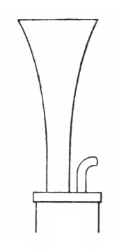

|
Messingregal German A reed stop of the Regal class. According to most sources, it gets its name from its tone, which was suggestive of brass (messing) instruments. Grove and Williams, however, attribute its name to its short brass resonators. The illustration is Audsley's. See also Brass Regal.ExamplesOnly one example of this stop is known: Messingregal 16', Great; Chapel, New College, Oxford, England; Grant, Degens & Bradbeer 1969. Hammered brass. BibliographyAudsley[1]: Messingregal. Audsley[2]: I.XIII Messingregal. Grove[1]: Regal. Sumner[1]: Messingregal. Wedgwood[1]: Regal. Williams[1]: Glossary: Regal.
|  |